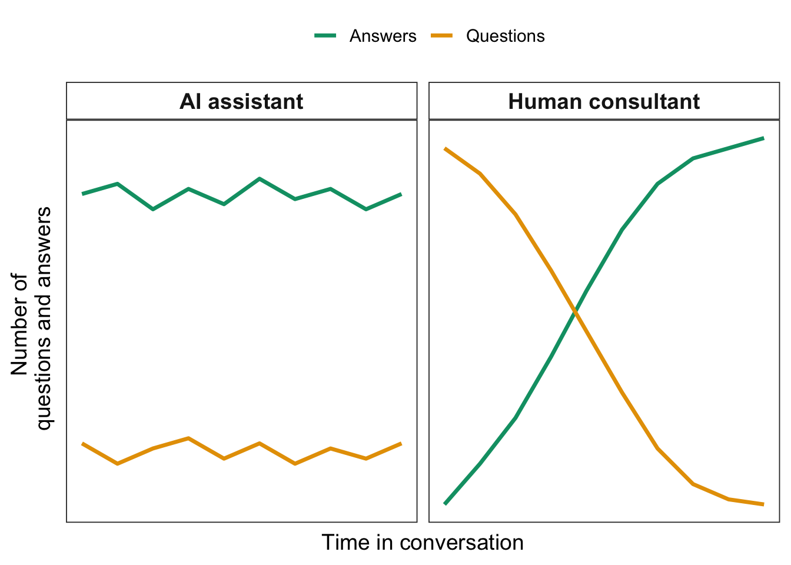
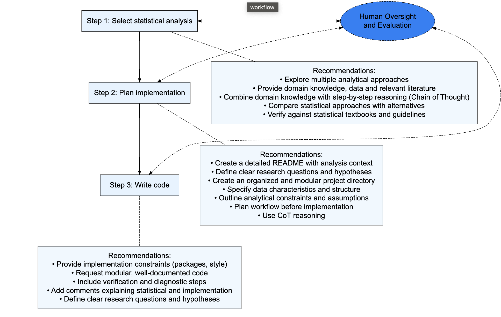
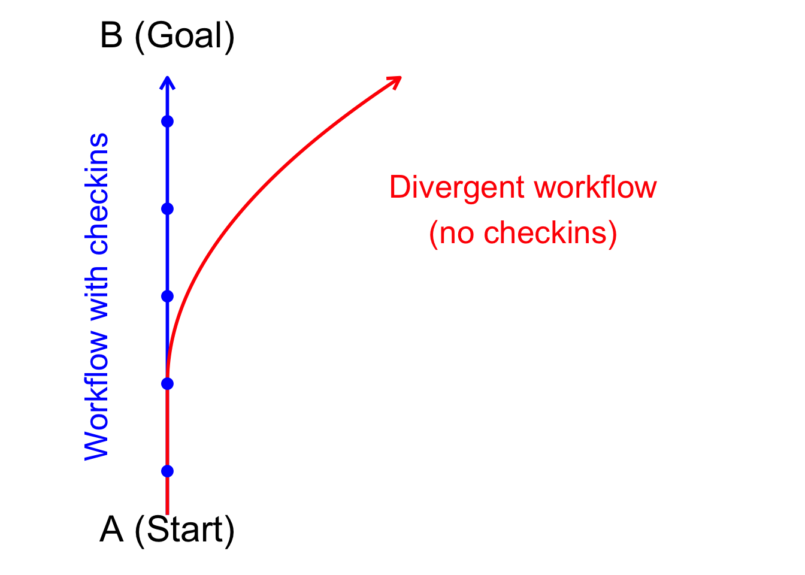

7 AI powered analysis workflows
Now you are familiar with some of the software options, let’s look at how to use these tools in AI powered analysis workflows and some best practice prompting guidelines.

7.1 Break your problems into parts
Take all your problems and rip ’em apart
Carry them off in a shopping cart
Another thing you should’ve known from the start
The problems in hand are lighter than at heart…
And another thing you have to know in this world
Cut up your hair, straighten your curls
Well, your problems hide in your curls
Little Acorns by The White Stripes
7.2 General prompting advice
7.2.1 Be clear and specific
7.2.2 Give lots of details
7.2.3 Put everything up front, rather than engaging in conversation
7.3 Stages of analysis
7.4 Select statistical analysis
7.4.1 Web search
7.5 Plan implementation and project structure
7.6 Writing the code
7.7 Iterating
7.7.1 Stages of analysis
There are overall decisions you need to make when developing your analysis:
- What types of statistics to use.
- How to implement those statistics in R code.
Its worthwhile separting these two decisions, as they are different issues. One is a science question, the other is a programming question.
When using Assistants its also worthwhile using different chat sessions to try and find answers.
7.7.1.1 Suggested workflow for new analyses
Here’s a workflow I’ve found works well if I’m doing an analysis that is new to means
Read the literature to identify the appropriate analysis for the research question and data.
Once I’ve narrowed down the options I look for useful domain knowledge: vignettes, manuals or blogs that have suitable R examples.
Start a new folder, setting up the directory and readme as descriped in this workshop.
Use copilot to implement the analysis, attaching data summaries and the domain knowledge to get the best prompts.
7.7.1.2 Suggested workflow for analyses I know well
Much the same as above, just less planning and you don’t need to search the literature because you know what you want to do. If you save useful domain knowledge when you see it you will also have the documents on hand to support the assistant.
7.7.2 How to prompt for better statistical advice
The limited number of evaluations of LLMs for statistics have found the biggest improvements for prompts that:
- Include domain knowledge in the prompt
- Include data or summary data in the prompt
- Combine domain knowledge with CoT (but CoT on its own doesn’t help)
In addition, larger and more up-to-date models tend to be better. e.g. try Claude 4.0 over GPT-mini.
Tip: LLMs will tend to suggest the most obvious statistical analyses. If you want to innovate creative new types of analyses you need to work a bit harder. One way to do this is to mix up your prompts to try and get cross-disciplinary pollination. For instance, you could ask it: “Suggest methods I could use for this analysis, taking inspiriation from different disciplines such as medicine, psychology and climate research”.
7.7.2.1 What LLMs don’t do that real statisticians do…
If you consult a human statistician they’ll usually ask you lots of questions. LLMs, in contrast, will tend to just give you an answer, whether or not they have enough context.
Say you asked me the same question you had in your LLM prompt like “how do see if fish are related to coral”. There’s no way I’d jump in with an answer with so little information. But the LLM will.
So be aware of this shortcoming and come to prompting pre-prepared with the context it will need to give you a better answer.
Figure 1 From Brown and Spillias in review Comparison of how an experienced human statistical consultant would structure a conversation compared to a typical prompt chain with an AI assistant (figure 1). The human consultant will usually ask more questions than provide answers at the start of a conversation, then switch to providing more answers once they understand the context of the study. An AI assistant will tend to be constant in the number of questions it asks, unless explictly prompted to ask questions rather than provide answers. This means it provides answers without first gathering appropriate context.
7.7.2.2 Guidelines for prompting for statistical advice
Attach domain knowledge Try to find quality written advice from recognized researchers to include in your prompts.
Always provide context on the data For instance, the model will give better advice for the prompt above if we tell it that pres.topa is integer counts (it will probably then recommend poisson GLM straight away). Likewise, if your replicates are different sites, tell that to the model so it has the opportunity to recommend approaches that are appropriate for spatial analysis.
Attach data to your prompts You can attach the whole dataset if its in plain text (e.g. csv). Or write a summary() and/or head() to file and attach that.
Combine the above approaches with Chain of Thought Just add ‘use Chain of Thought reasoning’ to your prompt. Its that easy.
Double-up on chain of thought with self evaluation After the initial suggest try prompts like “are you sure?”, “Take a deep breath, count to ten and think deeply”, “Evaluate the quality of the options on a 1-5 scale”.
Tip: Make a library of reference material for your prompting. If you see vignettes, blogs, or supplemental sections of papers that explain an analysis well, save them as text files to use in prompts.
7.7.3 With web tools
7.8
7.8.0.1 Working through your plan
Once you’re happy with the plan, you can get copilot to implement it. You can continue the current chat, or start a new chat to do this (depending on the length of the task).
Now step through, asking copilot to create each file as you.
At this point everyone’s answers will diverge, as there is an element of randomness to the LLM’s responses. We will compare as a class to see if everyone gets to a similar analysis and answer.
Tip: We are using the readme.md is copilot’s memory. This means the assitant always has the context it needs across different chat sessions (where it would otherwise forget). So its important to keep the readme updated. Its also useful to help you remember if you come back to the project some months or years later.
- Keep the readme.md updated and keep attaching it to your prompts. This will help keep it focused on the tasks that matter
- Use a two-step approach to identifying the statistical tests first, then implementing them as R code second. If you conflate these tasks you risk letting copilot guide the stats and getting it wrong.
- You can use it to help implement multiple different types of statistical tests for experimenting. If you do this, I just suggest you still use a two-step approach: plan a list of stats options first, then get copilot to implement them so you can compare results.
7.9 Agents
You can also just accept every suggestion without reading it, also called ‘vibe coding’. However, I don’t recommend doing that, especially when you are starting out. You need to get a feel of how much direction it needs and problems it might create. Without human intervention the algorithms have a tendency to go off task:
Attaching package: 'gridExtra'The following object is masked from 'package:dplyr':
combine
Have a readme with clear steps that you attach as a prompt is also helpful for Agent mode. It helps it stay on topic.
Agent mode also allows installation of additional tools, which we’ll explore later.